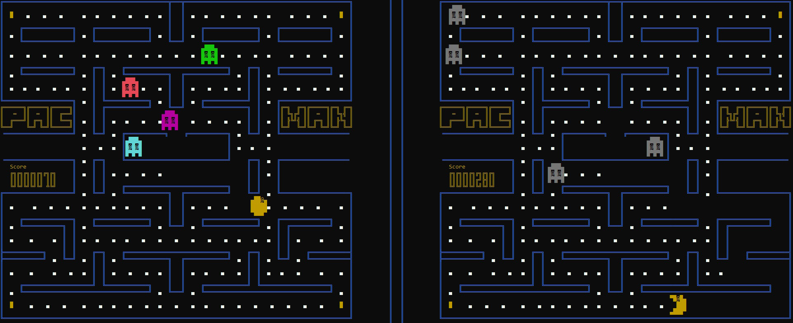

Pac-Man
Running On The Windows Command Line!

Running On The Windows Command Line!
Check Out This Project
A reiteration of the classic game Pac-Man for the Windows Console with a partially implemented mini game engine.
With this project, we wanted to create a Pac-Man clone that would run on the Windows Command-Line. For this to work, we had to implement a mini-game engine that allowed us to print Ascii sprites, and animate them. We then created a system that would allow us to read map files (still txt format). This system reads the files, prints the map, and automatically creates the necessary collisions for its walls.
The hardest part was the AI implementation, seeing we had no previous experience with it. Still, we managed to implement a simplified version of the AI that works great with the game.